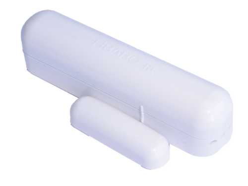

FIB_FGK-101
Firmware Version : 2.1 |
 |
colour: white
Quick StartS This device is a wireless Z-Wave sensor. For Inclusion and Exclusion, sending out a NIF or wakeup the device push down the tamper switch (push the device on a table) if the device is not yet mounted. Then hit the little button (B) inside of the enclosure one time. Please refer to the chapters below for detailed information about all aspects of the products usage. |
Product description
The Fibaro Door / Window Sensor is a battery powered, Z-Wave compatible reed sensor. It combines the functionality of 3 devices (reed, binary and temperature sensor) in one easy to use product. The sensor can be used for monitoring whether a door, window, window blind or a garage gate is open or closed. In addition, you can integrate any binary output sensor with the Z-Wave network using this sensor, e.g. motion sensors, flood sensors, alarm system sensors, etc.
The product consists of two elements. One of the parts is mounted on the moving part of the window or of the door. The other part is placed on the frame. The device needs to be included into a Z-Wave network by a remote control or any other Z-Wave controller. If an action is detected, the sensor sends a signal to the Z-Wave network main controller.
Installation Guidelines

The sensor consists of two parts: The sensor main device plus a little magent that is triggering the sensor when closed to the main device. One part of the sensor is mounted on the fixed part of the door or window while the other part is mounted on the moving part in a way, that both devices are adjacent to each other with no more than 5 mm distance between them. The main device can be mounted with double sided tape however for security applications it is strongly recommended to use screws. The holes to screw the device are placed behind the battery. Hence the battery need to be removed for this procedure. The image shows the two buttons 'TMP' and 'B', the reed sensor and the contact terminal for external switches and sensors.

The external temperature sensor DS18B20 is connected to the device as shown in this picture. In case the sensor shall only act as temperature sensor it can be placed everywhere and there is no need to place the magnet nearby. Beside to act as temperature sensor the device can also work as simple digial sensor transmitting the status of an externally connected on/off switch. The subsequent image shows how to connect such an external switch to the pins 'IN' and 'GND'.

Behavior within the Z-Wave network
I On factory default the device does not belong to any Z-Wave network. The device needs to join an existing wireless network to communicate with the devices of this network. This process is called Inclusion. Devices can also leave a network. This process is called Exclusion. Both processes are initiated by the primary controller of the Z-Wave network. This controller will be turned into exclusion respective inclusion mode. Please refer to your primary controllers manual on how to turn your controller into inclusion or exclusion mode. Only if the primary controller is in inclusion or exclusion mode, this device can join or leave the network. Leaving the network - i.e. being excluded - sets the device back to factory default.
If the device already belongs to a network, follow the exclusion process before including it in your network. Otherwise inclusion of this device will fail. If the controller being included was a primary controller, it has to be reset first.
For Inclusion and Exclusion push down the tamper switch (push the device on a table) if the device is not yet mounted. Then hit the little button (B) inside of the enclosure one time.
Operating the device
The sensor reports status changes and - if a external temperature sensor is attached - the temperature using wireless Z-Wave commands. There is no further local interaction needed or possible.
Wakeup Intervals - how to communicate with the device?
W This device is battery operated and turned into deep sleep state most of the time to save battery life time. Communication with the device is limited. In order to communicate with the device, a static controller C is needed in the network. This controller will maintain a mailbox for the battery operated devices and store commands that can not be received during deep sleep state. Without such a controller, communication may become impossible and/or the battery life time is significantly decreased.
This device will wakeup regularly and announce the wakeup state by sending out a so called Wakeup Notification. The controller can then empty the mailbox. Therefore, the device needs to be configured with the desired wakeup interval and the node ID of the controller. If the device was included by a static controller this controller will usually perform all necessary configurations. The wakeup interval is a tradeoff between maximal battery life time and the desired responses of the device.
To wake up the device push down the tamper switch (push the device on a table) if the device is not yet mounted. Then hit the little button (B) inside of the enclosure one time.
It is possible to set the node ID to 255 to send wakeup notifications as broadcast. In this mode device takes more time to go to sleep and drains battery faster, but can notify all it's direct neighbors about a wakeup.
Node Information Frame
NI The Node Information Frame is the business card of a Z-Wave device. It contains information about the device type and the technical capabilities. The inclusion and exclusion of the device is confirmed by sending out a Node Information Frame. Beside this it may be needed for certain network operations to send out a Node Information Frame.
For sending out a node information frame push down the tamper switch (push the device on a table) if the device is not yet mounted. Then hit the little button (B) inside of the enclosure one time.
Associations
A Z-Wave devices control other Z-Wave devices. The relationship between one device controlling another device is called association. In order to control a different device, the controlling device needs to maintain a list of devices that will receive controlling commands. These lists are called association groups and they are always related to certain events (e.g. button pressed, sensor triggers, ...). In case the event happens all devices stored in the respective association group will receive a common wireless command.
Association Groups:
| 1 | Group I is assigned to input IN1 (and the magnetic sensor). Sending BASIC SET or ALARM command frames. (max. nodes in group: 5) |
| 2 | Group II is assigned to TMP button. Once the button is released, ALARM GENERIC frame is sent to associated devices. (max. nodes in group: 5) |
| 3 | Group III reports on the condition of the device, only one device may be assigned to the group (main controller, by default). (max. nodes in group: 1) |
Configuration Parameters
Z-Wave products are supposed to work out of the box after inclusion, however certain configuration can adapt the function better to user needs or unlock further enhanced features.
IMPORTANT: Controllers may only allow to configure signed values. In order to set values in the range 128 … 255 the value sent in the application shall be the desired value minus 256. For example: to set a parameter to 200 it may be needed to set a value of 200 minus 256 = minus 56. In case of two byte value the same logic applies: Values greater than 32768 may needed to be given as negative values too.
| Value | Description |
|---|---|
| 0 — 65535 | seconds (Default 0) |
| Value | Description |
|---|---|
| 0 | LED turned Off (Default) |
| 1 | LED turned On |
| Value | Description |
|---|---|
| 0 | Normal Close (Default) |
| 1 | Normal Open |
| 2 | Mono Stable |
| 3 | bistable |
| Value | Description |
|---|---|
| 0 | ALARM GENERIC frame |
| 1 | ALARM SMOKE frame |
| 2 | ALARM CO frame |
| 3 | ALARM CO2 frame |
| 4 | ALARM HEAT frame |
| 5 | ALARM WATER frame |
| 255 | Control frame BASIC_SET (Default) |
| Value | Description |
|---|---|
| 1 — 99 | Dimming level |
| 255 | Turn On (Default) |
| Value | Description |
|---|---|
| 0 | for association group no. 1 information is sent (Default) |
| 1 | for association group no. 1 information is not sent |
| Value | Description |
|---|---|
| 0 — 255 | 1/16 K (Default 8) |
| Value | Description |
|---|---|
| 0 | IN and TMP Broadcast mode inactive (Default) |
| 1 | IN broadcast mode active, TMP broadcast mode inactive |
| 2 | IN broadcast mode inactive, TMP broadcast mode active |
| 3 | IN and TMP broadcast mode active |
| Value | Description |
|---|---|
| 0 | functionality deactivated (Default) |
| 1 | functionality activated |
Technical Data
| Battery Type | 1 * ER14250 (1/2AA) |
| Explorer Frame Support | Yes |
| SDK | 4.54 pl1 |
| Device Type | Slave with routing capabilities |
| Generic Device Class | Binary Sensor |
| Specific Device Class | Routing Binary Sensor |
| Routing | No |
| FLiRS | No |
| Firmware Version | 2.1 |